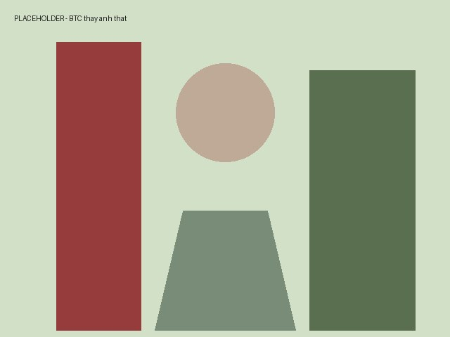

Ảnh vườn Đà Lạt tháng 12
Cuối năm tiện ghé Đà Lạt thăm vườn cây của người quen. Chụp được vài tấm ưng ý, post lên đây cho bạn bè xem.

Chủ vườn đứng cạnh giàn hoa giấy. Trời Đà Lạt tháng 12 lạnh ran, tay túi trong áo khoác mà vẫn thấy trong người nhẹ nhõm.
Đăng 18/12/2024 · Mười (Tòng Văn Mười) · liên hệ mua đồ gỗ cũ: 0901 555 239